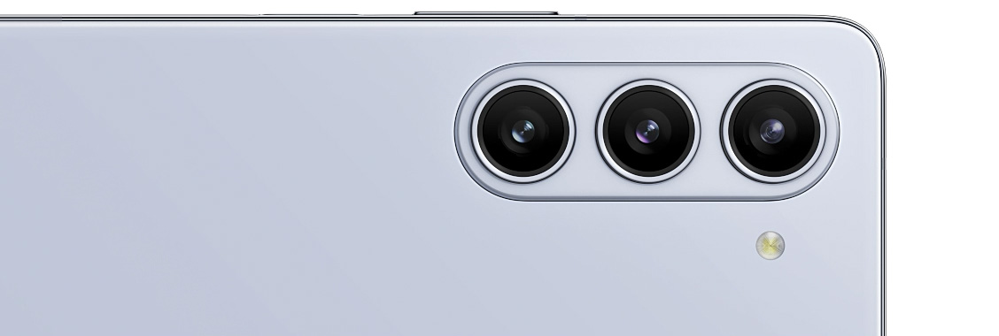
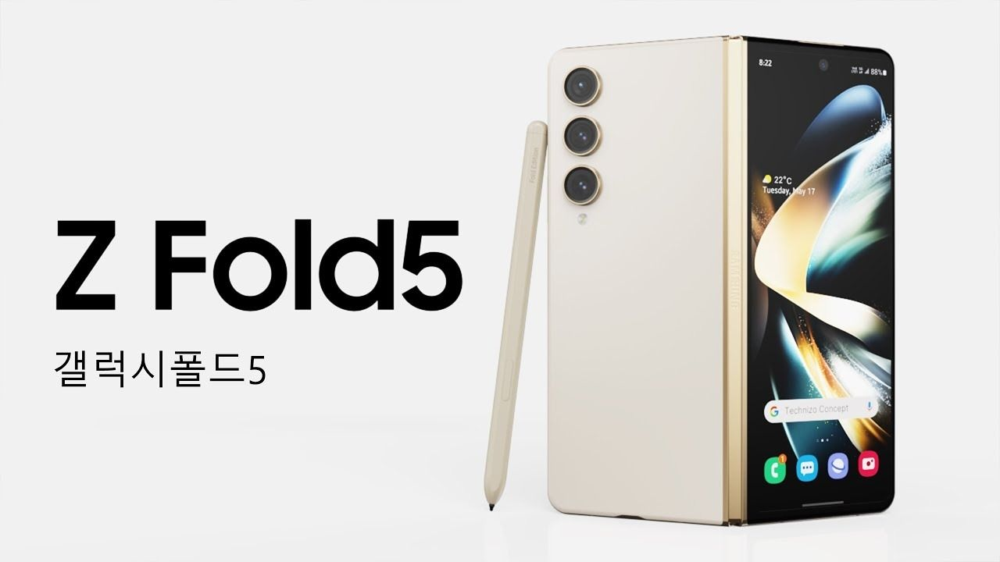
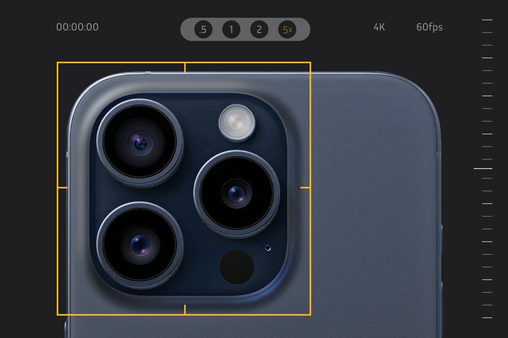
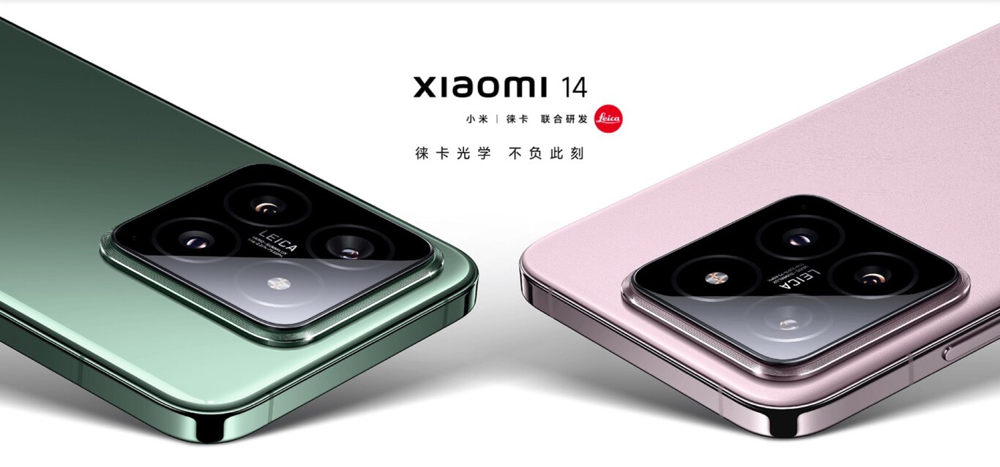
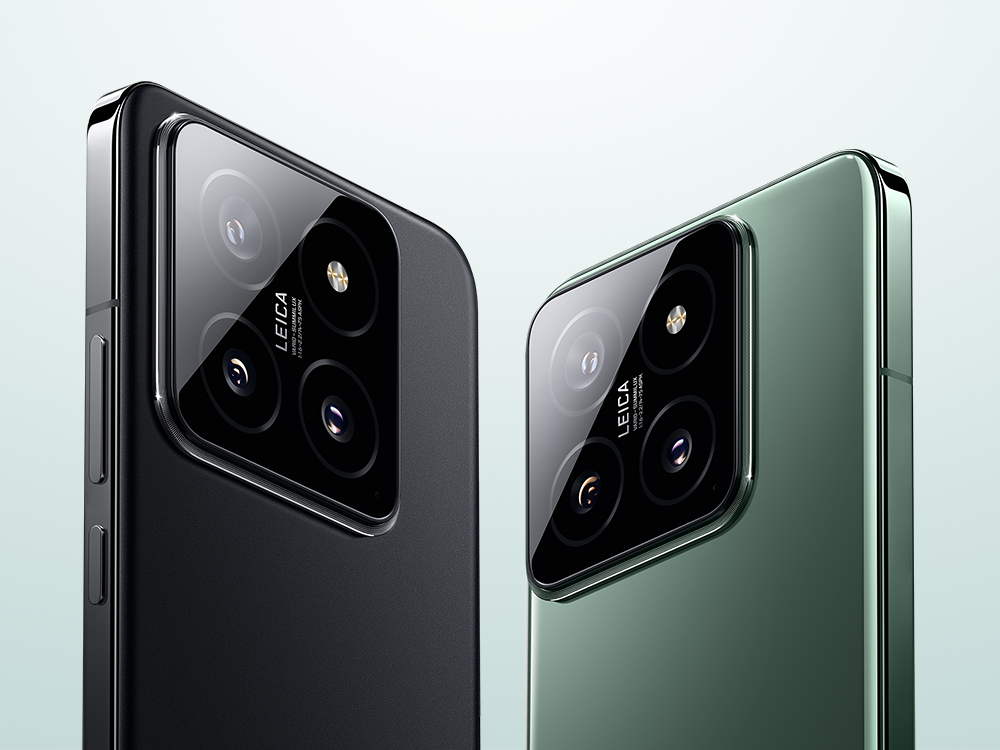
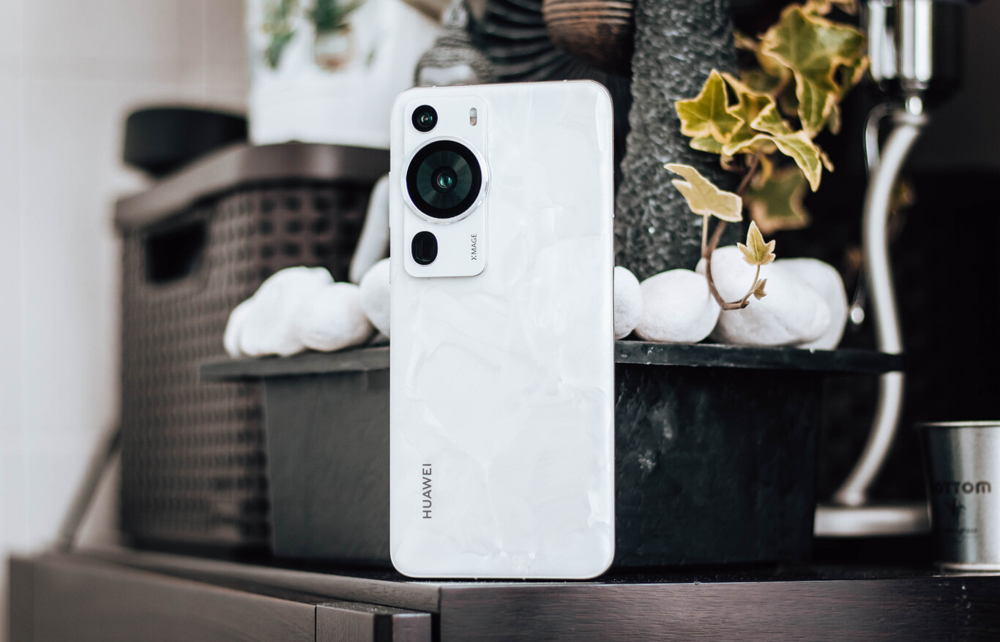

NOTICIAS
SAMSUNG
SAMSUNG FOLD 5
Samsung lleva marcando el ritmo de los móviles plegables desde el primer Samsung Galaxy Fold , es la principal marca de este segmento de productos, la que más ha innovado en paneles AMOLED flexibles y, por extensión, el primer fabricante que se nos viene a la cabeza cuando pensamos en ese factor forma: teléfonos que duplican su tamaño original a fuerza de desdoblarse. Por eso no resulta extraño que los Samsung Galaxy Z Fold5 y Samsung Galaxy Z Flip5 estén llamados a protagonizar 2023: tienen el podio plegable garantizado. Y no sólo ese podio.
El nuevo Fold se pliega sin dejar espacio para que se cuele suciedad en la zona cercana a las bisagras. Este cambio es notorio, por fin se aprecia plegable por completo. Y sin que esto proteja al Z Fold5 contra polvo y suciedad: el protagonista de esta review mantiene la certificación IPX8. No garantiza la protección contra el polvo a pesar de carecer un hueco visible, sí queda certificado contra el agua. ¿Que el Samsung Galaxy Z Fold5 se cae dentro de la piscina? En principio debería seguir funcionando, aunque yo no lo he probado. Sí lo metí bajo el grifo abierto sin que observara problema alguno.
APPLE
IPHONE 15

El Apple iPhone 15 Pro Max regresa con un mismo diseño pero con chasis de titanio que le otorga mayor resistencia y menor peso. El iPhone 15 Pro Max tiene una pantalla OLED de 6.7 pulgadas con tasa de refresco de 120Hz y está impulsado por un procesador Apple A17 Pro de seis núcleos. La cámara trasera del iPhone 15 Pro Max está liderada por un sensor de 48MP sumando una cámara ultrawide de 12MP y una cámara telefoto periscópica de 12MP con zoom óptico 5x. El iPhone 15 Pro Max reemplaza el puerto Lightning por un puerto USB-C, tiene parlantes stereo, Face ID, carga inalámbrica, resistencia al polvo y agua y corre iOS 17

Características principales
Pantalla: 6.7", 1290 x 2796 pixelsProcesador: Apple A17 Pro
Almacenamiento: 256GB/512GB/1TB
Expansión: sin microSD
Cámara: Triple, 48MP+12MP+12MP
OS: iOS 17
Perfil: 8.3 mm
Peso: 221 g
Precio: ~ 1200 USD
XIAOMI
XIAOMI 14
Xiaomi tiene claro cómo golpear en la gama alta. Los Xiaomi 14 y 14 Pro ya son oficiales en China, los dos teléfonos de gama alta que marcan el primer benchmark de los estándares que se esperan para el siguiente curso. Estrenan el Qualcomm Snapdragon 8 Gen 3, los paneles con más brillo del mercado y, lo más importante, llegan de la mano de HyperOS, el nuevo sistema operativo de Xiaomi.
Tal y como se había filtrado previamente, el Xiaomi 14 es el hermano pequeño. Hablamos de un teléfono con una pantalla de 6,36 pulgadas, con resolución 1.5K (2670 x 1200 píxeles, 460ppi). Es de tipo LTPO, siendo capaz de funcionar entre 1 y 120 Hz. Este panel ofrece un bárbaro brillo pico de 3.000 nits. Es la primera vez que se estrena en un teléfono este panel S8 CSOT de TCL, una gran promesa que (por el momento), parece estar por encima de los paneles BOE y Samsung.
HUAWEI
HUAWEI P60
Puede gustar más o menos, pero la parte trasera del Huawei P60 Pro es diferente. En primer lugar, nos encontramos con un acabado 'Rococo White' bastante curioso. El teléfono está rematado en cristal y aluminio, pero tiene un peculiar recubrimiento. Huawei lo define como "una textura perlada" y el punto más diferencial es que cada teléfono tiene su propio patrón. Tan solo el acabado en este blanco perlado tiene esta característica tan llamativa.

En el proceso de fabricación de los P60 Pro, se añade polvo de perla mineral al panel trasero del smartphone y se deja que se aglomere. De esta forma, se consigue esta textura de nácar distinta para cada uno de ellos.
Lo segundo que nos llama la atención es el módulo de cámara. Huawei ha intentado que, con el móvil en horizontal, tengamos el recuerdo de una cámara profesional. Más allá de que lo hayan conseguido o no, es un diseño bastante diferencial, con un módulo diferente.
Si miramos el dispositivo por sus laterales, encontramos una pequeña pega: los botones de volumen están muy, muy altos. Esto dificulta su acceso cuando usamos el móvil con una mano: no es posible llegar al botón de volumen +. El botón de desbloqueo sí que queda a la altura del pulgar, manteniendo ese color de acento que tanta personalidad le sigue dando.